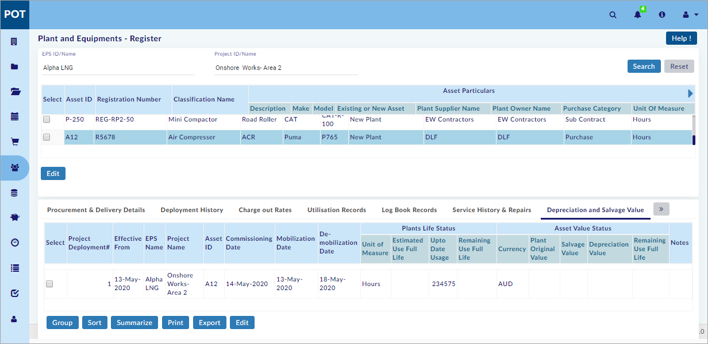

Plant and Equipments – Register
Plant register in Resources holds all the Plant/Equipment details of complete Project (in All EPS ID’s). At the time of registering the plant, it can be assigned to any project in an EPS.
You can perform the following in the Plant and Equipments – Register Section:
- Create a New Plant Record
- Edit the Plant Record
- Deactivate the Plant Record
- Create the Procurement & Delivery Details for New Plant
- Search the Existing Records
- View the Plant’s Current Status
- Select the Plant Record
- View/Edit the Procurement & Delivery Details
- Enter/Edit the Deployment History
- Enter/Edit the Charge Out Rates
- View the Utilisation Records
- Log Book Records
- Search the Log Book
- Enter/Edit the Log Book
- View the Plant Working Days
- Service History & Repairs
- Create the Service History
- Create the Records of Repair
- Enter/Edit the Depreciation and Salvage Value
- Search and View the Request for Transfers
- Submit the Request for Transfer
- Search the Approval for Transfers
- View and Approve/Reject the Request for Transfer
Important:
- User should enter and save the required details consecutively in Procurement & Delivery Details tab, Deployment History tab, and Charge Out Rates tab to perform actions in the other Modules.
Note:
- Click
 or
or  to navigate through the columns.
to navigate through the columns. - Click
 or
or  to navigate through the tabs.
to navigate through the tabs.
This section helps you to create a new Plant Record.
To create a new Plant Record, do the following.
- Click
 on the landing page and the Master Plant List window opens as shown in the figure.
on the landing page and the Master Plant List window opens as shown in the figure.
Note:
- Click Reset to view
 if the same is not visible.
if the same is not visible.
- On the Master Plant List window, enter/select all the mandatory fields.
- Click
 to save the Plant details.
to save the Plant details.
Note:
- Asset ID, Registration Number, Plant Description, Make, Model fields are User entry fields.
- Enterprise – Central Library – Plant Classification is displayed in Resource ID.
- Resource Name and Unit Of Measure are auto-filled according to the selected Resource ID.
- Select Existing Plant or New Plant from the Asset Type drop-down menu.
- Enterprise – Central Library – Company List is displayed in Plant Supplier Name and Plant Owner Name.
- Enterprise – Central Library – Procurement Classification is displayed in Plant Purchase Category.
- Click to create Single/Multiple Record(s).
- Select the Record(s) and click
 to delete Single/Multiple Record(s).
to delete Single/Multiple Record(s).
You have successfully created a new Plant Record.
This section helps you to edit the Plant record.
To edit the Plant record, do the following.
- Select the record you need to edit and click
 .
. - The Master Plant List window opens as shown in the figure.
- Edit the Plant details.
- Click
 to save the edited Plant record.
to save the edited Plant record.
You have successfully edited the Plant record.
This section helps you to deactivate a Plant record.
Note:
- Plants that are assigned to a project cannot be deactivated.
Create Procurement & Delivery Details for New Plant:
This section helps you to create the Procurement & Delivery Details.
To create the Procurement & Delivery Details, do the following.
- Select the new plant record as shown in the figure.
- The Procurement & Delivery Details tab opens as shown in the figure above.
- Click
 available on the bottom right side of the screen, and the Add Purchase Order Plant List window opens as shown in the figure.
available on the bottom right side of the screen, and the Add Purchase Order Plant List window opens as shown in the figure.
- Select EPS ID and the Project Name is auto-filled.
- Select Purchase Order, and then select Schedule Item ID and the Schedule Item Desc. is auto-filled.
Note:
- Procurement – Purchase Orders – filtered based on schedule items is displayed in Purchase Order.
- Select Commissioning Date.
- On the Docket Details List sub-window, select/enter all the required details.
Note:
- Delivery Docket Date, Delivery Docket Number, Date of Delivery To Destination, Quantity Delivered, Comments from Receiver and Location of Delivery fields are User entry fields.
- List of Employees assigned to selected project is fetched from Resources-Employee and displayed in Received by field.
- Delivery Type (Full or Part) is User selection. When Part is selected, the total of Quantity delivered field is seen in Cumulative Qty Delivered field.
- First Odo Meter Reading is enabled only when Cumulative Qty Delivered is 1.
- Click
 to choose the required document from your computer.
to choose the required document from your computer. - Click
 to save the Procurement & Delivery Details.
to save the Procurement & Delivery Details.
Note:
- Add and Delete buttons are enabled only when Quantity Delivered is <1
- Click
 to create Single/Multiple Record(s).
to create Single/Multiple Record(s). - Select the Record(s) and click
 to delete Single/Multiple Record(s).
to delete Single/Multiple Record(s).
You have successfully created the Procurement & Delivery Details.
This section helps you to search the existing records.
To search the existing records, do the following.
- Select the EPS ID/Name or Project ID/Name.
- Click Search available on the top right side of the screen.
- The search results are shown on the screen as shown in the figure.
Note:
- Plant & Equipment details not available for the search criteria warning message is shown, if records are not available for the selected project.
- Click Reset to reset the screen to the default view.
You have successfully searched the existing records.
This section helps you to view the Plant’s Current Status.
To view the Plant’s Current Status, do the following.
- Search the existing records. (See the Search Existing Records Section above)
- Click
 available on the top right side of the screen and the Current Status column is shown as shown in the figure.
available on the top right side of the screen and the Current Status column is shown as shown in the figure.
Note:
- If it is a new plant, EPS Name and Project Name are fetched from Procurement & Delivery Details tab.
- If it is an existing plant, EPS Name and Project Name are fetched from Deployment History tab.
- Current Status, Purchase/Commissioning Date, Mobilization Date, Anticipated De-Mobilization Date and De-Mobilization Date are fetched from Deployment History tab.
- Current OdoMeter Reading is fetched from Deployment History tab or Log Book Records tab.
You have successfully viewed the Plant’s Current Status.
This section helps you to select the Plant record.
To select the Plant record, do the following.
- Search the existing records. (See the Search Existing Records Section above)
- Select the plant record as shown in the figure.
You have successfully selected the plant record.
View/Edit Procurement & Delivery Details:
This section helps you to view/edit the Procurement & Delivery Details.
To view/edit the Procurement & Delivery Details, do the following.
- Select the Plant record. (See the Select Plant Record Section above)
- The Procurement & Delivery Details tab opens as shown in the figure.
- Click and The Add Purchase Order Plant List window opens as shown in the figure.
- Edit the Procurement & Delivery Details.
- Click
 to choose the required document from your computer.
to choose the required document from your computer. - Click
 to save the Procurement & Delivery Details.
to save the Procurement & Delivery Details.
You have successfully viewed/edited the Procurement & Delivery Details.
Enter/Edit Deployment History:
This section helps you to enter/edit the Deployment History. In this tab, the User can update the details of Plant Services. Ex: Mobilization date, etc.
To enter/edit the Deployment History, do the following.
- Select the Plant record. (See the Select Plant Record Section above)
- Select the Deployment History tab.
- The Deployment History tab opens as shown in the figure.
- Select the record you need to edit and click
 .
.
Note:
- The following details are auto-filled from the Procurement & Delivery Details tab (if the selected plant is New Plant).
- Project Deployment #
- EPS Name
- Project Name
- Profit Center
- Finance Center
- Commission Date of New Asset
- Asset ID
- Project Plant ID
- Mobilization under Odo Meter Reading
- The above-mentioned details should be entered by the User if selected Plant is an Existing Plant.
- The Deployment History window opens as shown in the figure.
- Enter/edit the Deployment History.
- Click
 to save the Deployment History.
to save the Deployment History.
You have successfully entered/edited the Deployment History.
This section helps you to enter/edit the Charge Out Rates. In this tab, User can update the details of Plant charge out rates. Ex: Rate/Unit [Normal Shift, Double Shift], etc.
To enter/edit the Charge Out Rates, do the following.
- Select the Plant record. (See the Select Plant Record Section above)
- Select the Charge Out Rates tab.
- The Charge Out Rates tab opens as shown in the figure.
- Select the record you need to edit and click
 .
.
Note:
- The following details are auto-filled from the Deployment History tab.
- Project Deployment #
- Effective From
- EPS Name
- Project Name
- Asset ID
- Project Plant ID
- Charge Out Unit
- Currency
- The Charge Out Rate window opens as shown in the figure.
Note:
- Rates Without Fuel under Normal Shift, and Rates Without Fuel under Double Shift becomes editable when WITHOUT FUEL is selected from the Plant Charge Out Category drop-down menu.
- Rates With Fuel under Normal Shift, and Rates With Fuel under Double Shift becomes editable when WITH FUEL is selected from the Plant Charge Out Category drop-down menu.
- Enter/edit the Charge Out Rates.
Note:
- Plant Idle Time Charge Out Rate, Cost Code ID and Rate under Plant Mobilization, Cost Code ID and Rate under Plant De-Mobilization, and Notes fields are User entry fields
- Projects-Project Library-Cost Code Schedules are displayed in Cost Code ID field.
- Click
 to save the Charge Out Rates.
to save the Charge Out Rates.
You have successfully entered/edited the Charge Out Rates.
This section helps you to view the Utilisation Records. In this tab, It shows the records automatically, if any utilization happens.
To view the Utilisation Records, do the following.
- Select the Plant record. (See the Select Plant Record Section above)
- Select the Utilisation Records tab.
- The Utilisation Records tab opens as shown in the figure.
Note:
- The following details are auto-filled from Resources – Plant & Equipments - Deployment History tab.
- Project Deployment #
- EPS Name
- Project Name
- Asset ID
- Project Plant ID
- Unit of Measure
- Mobilization Date
- De-mobilization Date
- Under Project Wise, Used Units and Idle Units are auto filled from Asbuilt Records – Workdairy – Approve Workdairy.
- Under Odo meter reading-on, Mobilization and De-Mobilization are auto-filled from Charge out Rates tab.
- Project wise Units of Usage-as Per Meter = De-Mobilization Odo meter reading - Mobilization Odo meter reading.
You have successfully viewed the Utilisation Records.
It will show the details of the system date to last month. User can edit/update the details of Log book and view the Plant Working Days details.
This sub-section helps you to search the Log Book.
To search the Log Book, do the following.
- Select the Plant record. (See the Select Plant Record Section above)
- Select the Log Book Records tab.
- The Log Book sub-tab opens as shown in the figure.
- Select From Date and To date.
- Click Search available on the bottom right side of the screen.
- The search results are shown on the screen.
Note:
- To Date is the current date and From Date is one month before the current date by default.
- Date, Asset ID, EPS, and Project are auto-filled from the Deployment History screen.
You have successfully searched the Log Book.
This sub-section helps you to enter/edit the Log Book.
To enter/edit the Log Book, do the following.
- Select the Plant record. (See the Select Plant Record Section above)
- Select the Log Book Records tab.
- The Log Book sub-tab opens as shown in the figure.

- Select the record you need to edit and click
 .
. - The Log Book Records window opens as shown in the figure.
Note:
- Date, Asset ID, EPS Name, and Project Name are auto-filled from Deployment History Tab.
- Net Unit Used = End Meter Reading – Start Meter Reading
- Under Driver or Operator, select ID (employee list registered to the selected project) and the Name is auto-filled.
- Enter/Edit the required Details.
- Click
 to save the Log Book Details.
to save the Log Book Details.
You have successfully entered/edited the Log Book Details.
This sub-section helps you to view the Plant Working Days. It shows the details of Working and Non-working days.
To view the Plant Working Days, do the following.
- Select the Plant record. (See the Select Plant Record Section above)
- Select the Log Book Records tab.
- Under Log Book Records tab, select the Plant Working Days sub-tab.
- The Plant Working Days sub-tab opens as shown in the figure.
Note:
- Plant Working Days are auto-filled from Asbuilt Records – Attendance – Plant attendance.
You have successfully viewed the Plant Working Days.
This sub-section helps you to create the Service History. User can save the service history details on this tab.
To create the Service History, do the following.
- Select the Plant record. (See the Select Plant Record Section above)
- Select the Service History & Repairs tab.
- The Service History sub-tab opens as shown in the figure.
- Click
 and the Service History window opens as shown in the figure.
and the Service History window opens as shown in the figure.
- Under Current or Last Service Carried Out, enter Date and Odo Meter Reading. Select Service Category and the Service Sub Category is auto-filled.
- Under Next Service Due, enter Odo Meter Reading Reaches. Select Service Category and the Service Sub Category is auto-filled.
Note:
- Enterprise – Central Library – Plant service History is displayed in Service Sub Category.
- Enter the required Service History Details.
- Click
 to save the Service History.
to save the Service History.
You have successfully created the Service History.
This sub-section helps you to create the Records of Repair. User can save the Repair history details on this tab.
To create the Records of Repair, do the following.
- Select the Plant record. (See the Select Plant Record Section above)
- Select the Service History & Repairs tab.
- Under Service History & Repairs tab, select the Records of Repair sub-tab.
- The Records of Repair sub-tab opens as shown in the figure.
- Click
 and the Record of Repairs window opens as shown in the figure.
and the Record of Repairs window opens as shown in the figure.
- Select Repair Category and the Item of Repair is auto-filled.
- Select Major Spare Part Items Replaced and the Unit of Measure is auto-filled.
- Enter Quantity.
- If the project docket exists for the selected item, select the Project Docket.
Note:
- Enterprise – Central Library – Plant Service History is displayed in Repair Category.
- Enterprise – Central Library – Material Classification is displayed in Major Spare Part Items Replaced.
- Resources – Materials – Generate Project Docket is displayed in Project Docket.
- Enter the required Repair Details.
- Click
 to save the Repair Details.
to save the Repair Details.
You have successfully created the Record of Repair.
Enter/Edit Depreciation and Salvage Value:
This section helps you to enter/edit the Depreciation and Salvage Value. In this tab, User can edit/update the details of Plants Life status and Asset value status.
To enter/edit the Depreciation and Salvage Value, do the following.
- Select the Plant record. (See the Select Plant Record Section above)
- Select the Depreciation and Salvage Value tab.
- The Depreciation and Salvage Value tab opens as shown in the figure.

- Select the record you need to edit and click
 .
. - The Depreciation and Salvage Value window opens as shown in the figure.
Note:
- On the Depreciation and Salvage Value window, the first row details, Unit of Measure and Currency in the second row are auto-filled from the Deployment History tab.
- Enter/edit the required details.
Note:
- Upto Date Usage field is auto-filled from Resources – Plant & Equipments - Log Book Records – Log Book - End Meter Reading.
- Remaining Use Full Life = Estimated Use Full Life - Upto Date Usage.
- Depreciation Value = (Plant Original Value - Salvage Value) / Estimated Use Full Life * Upto Date Usage.
- Remaining-Use Full Value = Plant Original Value - Depreciation Value.
- Estimated Use Full Life field under Plant Life Status is User entry field.
- Plant Original Value and Salvage Value fields under Asset Value Status are User entry fields.
- Click
 to save the Depreciation and Salvage Value.
to save the Depreciation and Salvage Value.
You have successfully entered/edited the Depreciation and Salvage Value.
Search and View Request for Transfers:
This section helps you to search and view the Request for Transfers.
To search and view the Request for Transfers, do the following.
- Select the Plant record. (See the Select Plant Record Section above)
- Select the Request for Transfer tab.
- The Request for Transfer tab opens as shown in the figure.

- Select From Date and To date.
- Select Login User Records to search the records of the logged-in user (or select All User Records to search the records of all the users).
- Click Search available on the bottom right side of the screen.
- The search results are shown on the screen as shown in the figure.
- Click
 to view the submitted Request for Transfer details.
to view the submitted Request for Transfer details.
Note:
- Login User Records is selected by default.
- To Date is the current date and From Date is one month before the current date, by default.
You have successfully searched and viewed the Request for Transfers.
This section helps you to submit the Request for Transfer. After completion of a plant job in a project, plant/equipment needs to be transferred to another project. By clicking the new request for plant transfer, after selecting a plant row, a notification will be sent to the approver to transfer the plant to its inter-project.
To submit the Request for Transfer, do the following.
- Select the Plant record. (See the Select Plant Record Section above)
- Select the Request for Transfer tab.
- The Request for Transfer tab opens as shown in the figure.
- Click
 and the Requisition window opens as shown in the figure.
and the Requisition window opens as shown in the figure.
- Select Origin Project and Destination Project.
Note:
- Date Of Request is auto filled with the system date.
- Requisition ID, and Notification ID are auto generated after submitting Request.
- Approval Date, and Approver ID are auto-filled after completion of the Approval process.
- The plant(s) are transferred from Origin Project to Destination Project.
- Logged in User details are auto-filled on the Requestor Sub-window.
- On the Approver Sub-window, select Employee ID, and the other text fields are auto-filled (Select from users list assigned to the selected destination project. The selected employee is the Approver for the Request).
Note:
- Admin – User List is displayed in Employee ID, on the Approver Sub-window.
- On the Plant List Sub-window, click
 and the Plant Details window opens.
and the Plant Details window opens. - Select the Plant(s) and click
 to add Plant(s) as shown in the figure.
to add Plant(s) as shown in the figure.

- Select Required Date of Transfer.
- Click
 to choose the required document from your computer.
to choose the required document from your computer. - Click
 to submit the plant transfer request details.
to submit the plant transfer request details.
Note:
- Select the Plant(s) and click
 to delete Plant(s) details.
to delete Plant(s) details.
You have successfully submitted the Request for Transfer.
Search Approval for Transfers:
This section helps you to search the Approval for Transfers.
To search the Approval for Transfers, do the following.
- Select the Plant record. (See the Select Plant Record Section above)
- Select the Approval for Transfer tab.
- The Approval for Transfer tab opens as shown in the figure.
Note:
- Submitted records under default search criteria are seen, after opening the Approval for Transfer tab.
- Select From Date and To date.
- Select the approval status from the Approval Status drop-down menu.
Note:
- User can select from the following, from the Approval Status drop-down menu.
- Pending For Approval
- Approved
- Rejected
- All
- Select Login User Records to search the records of the logged-in user (or select All User Records to search the records of all the users).
- Click Search available on the bottom right side of the screen.
- The search results are shown on the screen as shown in the figure.
Note:
- Login User Records is selected by default.
- To Date is the current date and From Date is one month before the current date by default.
You have successfully searched the Approval for Transfers.
View and Approve/Reject Request for Transfer:
This section helps you to View and Approve/Reject the Plant Transfer Request. Transfer of the plant is done by clicking the Approve button. After requesting for transfer of a plant, approver transfers the plant by clicking this button. After transferring the plant, the Plant’s Inter Project becomes its current project and the current project becomes its experience.
To View and Approve/Reject the Plant Transfer Request, do the following.
- Select the Plant record. (See the Select Plant Record Section above)
- Select the Approval for Transfer tab.
- The Approval for Transfer tab opens as shown in the figure.

- Select From Date and To date.
- Select Pending For Approval internal status from the Approval Status drop-down menu.
- Select Login User Records to search the records of the logged-in user (or select All User Records to search the records of all the users).
- Click Search available on the bottom right side of the screen.
- The search results are shown on the screen as shown in the figure.
- Click and the Requisition window opens as shown in the figure.
- View the Plant Transfer Request details and you can perform the following in the Requisition window:
- In case of Exceeding normal time in Projects > Project Settings > Plant Transfer tab, click
 .
. - The Request For Additional Time window opens as shown in the figure.
- On the Request For Additional Time window, select/enter the required details and click
 to request for additional time and generate a notification.
to request for additional time and generate a notification. - Select Agreed Date for Transfer and click
 to Approve the Plant Transfer Request.
to Approve the Plant Transfer Request. - Click
 to Reject the Plant Transfer Request.
to Reject the Plant Transfer Request.
You have successfully viewed and Approved/Rejected the Plant Transfer Request.